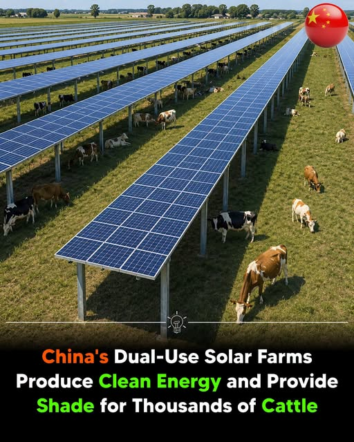

Terra Nova Development · Article #108
China’s Dual-Use Solar Farms
Clean Energy and Livestock Grazing on the Same Agricultural Land

Download this article as a Word documentChina is rapidly expanding agrivoltaic farms, where solar panels are installed above farmland to generate clean electricity while allowing crops, livestock, or other agricultural activities to continue beneath them. This dual-use approach helps produce renewable energy without taking productive land out of farming.
A nationwide study published in the journal Scientific Data found that by the end of 2022, China had 1,678 agrivoltaic projects with a combined installed capacity of 134.55 gigawatts (GW). The country’s first commercial agrivoltaic project began in 2010, and the sector has expanded rapidly, making China one of the world’s largest adopters of this technology.
Agrivoltaic projects are spread across China, with Guangdong, Guizhou, Shandong, Hebei, Anhui, and Jiangsu among the leading provinces. The most common systems combine solar power with crop farming, fisheries, and greenhouses, while many newer projects also integrate livestock grazing beneath elevated solar panels.
On grazing sites, cattle and other livestock feed under the raised solar arrays, where the panels provide shade that can reduce heat stress during hot weather. At the same time, the animals naturally control grass and weeds beneath the panels, lowering vegetation management and maintenance costs for solar farm operators.
Researchers say agrivoltaics can significantly improve land-use efficiency by producing clean electricity and supporting agriculture on the same land. As countries seek to expand renewable energy while protecting farmland and food production, this dual-use model is gaining increasing attention as a practical solution for sustainable development.
Sources
- Nature
- PubMed